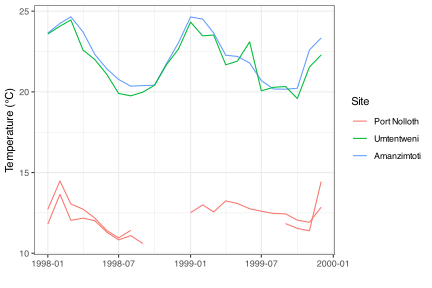

11. Tidy data
The tidy data concept
![]()
“Order and simplification are the first steps toward the mastery of a subject.”
— Thomas Mann
“Get your facts first, and then you can distort them as much as you please.”
— Mark Twain
The Tidyverse is a collection of R packages designed for data manipulation, exploration, and visualisation. It is based on a philosophy of ‘tidy data,’ which is a standardised way of organising data. The purpose of these packages is to make working with data more efficient. The core Tidyverse packages were created by Hadley Wickham, but over the last few years other individuals have added some packages to the collective, which has significantly expanded our data analytical capabilities through improved ease of use and efficiency. All packages that are built on tidy principles provide the use of a consistent set of tools across a wide range of data analysis tasks. The core Tidyverse packages can be loaded collectively by calling the tidyverse package, as we have seen throughout this workshop. The packages making up the Tidyverse are shown in Figure 1.

1 Properties of tidy data
As we may see in Figure 2, the tidying of ones data should be the second step in any workflow, after loading the data.

But what exactly are tidy data? It is not just a a buzz word, there is a real definition. In three parts, to be exact. Taken from Hadley Wickham’s R for Data Science:
Consider this example of tidy data:
| region | site | Ind | measurement | value |
|---|---|---|---|---|
| WC | Kommetjie | 2 | blade_weight | 1.9 |
| WC | Kommetjie | 2 | blade_length | 160.0 |
| WC | Kommetjie | 2 | blade_thickness | 2.0 |
| WC | Kommetjie | 2 | stipe_mass | 1.5 |
| WC | Kommetjie | 2 | stipe_length | 120.0 |
| WC | Kommetjie | 2 | stipe_diameter | 56.0 |
- Each variable must have its own column. Some of the variables tell us about the measurements (the
regionwhere thesitewas located, the replicate number (ind) of the plants sampled, and the nature of themeasurementtaken), and one variable gives thevalueof the measurement. - Each measurement must have its own row—the value of each of the things measured must be in its own row; for example, in the Laminaria data the measured things include
blade_length,blade_weight, etc., and they can all be captured in one column named, for example,measurement. - Each
valuemust have its own cell—each of the things that is known and measured must be in its own cell.
The core principle of tidy data is represented graphically in Figure 3). One will generally satisfy these three rules effortlessly simply by never putting more than one dataset in a file, and never putting more (or less) than one variable in the same column. We will go over this several more times today so do not fret if those guidelines are not immediately clear.

Grammar of data manipulation The Tidyverse provides a set of functions and tools for data manipulation that can be combined in a way that is similar to a grammar. This makes it easy to write complex data manipulation tasks, and also makes it easier to read and understand code written by others.
Consistent style The Tidyverse provides a consistent style for functions and data structures, making it easier to work with multiple packages within the Tidyverse, as well as with other R packages.
Interoperability The Tidyverse is designed to work seamlessly with other R packages, so that data can be easily moved between different analysis pipelines.
Overall, the Tidyverse philosophy is centered around making data analysis in R easier, more intuitive, and more efficient, while also promoting best practices and reproducibility in data analysis.
2 Different ways to be untidy
In order to illustrate the meaning of this three part definition, we are going to learn how to manipulate a non-tidy dataset into a tidy one. To do so we will need to learn a few new, very useful functions. Let’s load our demo dataset to get started. This snippet from the SACTN dataset contains only data for 2008-2009 for three time series, with some notable (untidy) changes. The purpose of the following exercises is not only to show how to tidy data, but to also illustrate that these steps may be done more quickly in R than MS Excel, allowing for ones raw data to remain exactly how they were collected, with all of the manipulations performed on them documented in an R script. This is a centrally important part of reproducible research.
load("../../data/SACTN_mangled.RData")With the SACTN_mangled.RData data loaded, let’s now have a peek at them. We will first see that we have loaded not one, but five different objects into our environment pane in the top right of our RStudio window. These all contain the exact same data in different states of disrepair. As one may guess, some of these datasets will be easier to use than others.
SACTN1
SACTN2
SACTN3
# Spread across two dataframes
SACTN4a
SACTN4bWe start off by looking at SACTN1. If these data look just like all of the other SACTN data we’ve used thus far that’s because they are. These are how tidy data should look. No surprises. In fact, because these data are already tidy it is very straightforward to use them for whatever purposes we may want. Making a time series plot, for example.
ggplot(data = SACTN1, aes(x = date, y = temp)) +
geom_line(aes(colour = site, group = paste0(site, src))) +
labs(x = "", y = "Temperature (°C)", colour = "Site") +
theme_bw()
%>%
Remember that this funny series of symbols is the pipe operator. It combines consequetive rows of code together so that they run as though they were one ‘chunk’. We will be seeing this symbol a lot today. The keyboard shortcut for %>% is ctrl-shift-m.
3 Long and wide formatted data
Before tidy became the adjective used to describe neatly formatted data, people used to say long. This is because well organised dataframes tend to always be longer than they are wide (with the exception of species assemblage data). The opposite of long data are wide data. If one ever finds a dataset that is wider than it is long then this is probably because the person that created them saved one variable across many columns.
As we sit here and read through these examples it may seem odd that so much effort is being spent on something so straightforward as tidy data. Surely this is too obvious to devote an entire day of work to it? Unfortunately not. As we go out into the wild world of ‘real life data’, we tend to find that very few datasets (especially those collected by hand) are tidy. Rather they are plagued by any number of issues. The first step then for tidying up the data are to have a look at them and discern what are the observations that were made/recorded (the ‘measurements’), and what are the variables within those observations. We also need to know something about how or where the data were collected, or what they represent—this is information about the data, i.e. some meta-data.
3.1 pivot_longer()
The R function pivot_longer() is a useful tool for transforming data from wide to long format. It belongs to the tidyr package (loaded with tidyverse) and allows you to reshape your data frame by gathering multiple columns into key-value pairs. Specifically, pivot_longer() takes in a data frame and allows you to select a set of columns that you would like to pivot into longer format, while specifying the names of the key and value columns that you want to create. The resulting data frame will have a new row for each unique combination of key and value pairs. This function is particularly useful when you need to reshape your data in order to carry out certain analyses or visualisations.
Let’s have a look now at SACTN2 for an example of what wide data look like, and how to fix it.
In SACTN2 we can see that the src column has been removed and that the temperatures are placed in columns that denote the collecting source. This may at first seem like a reasonable way to organise these data, but it is not tidy because the collecting source is one variable, and so should not take up more than one column (i.e. there are multiple observations per row). We need to gather these source columns together into one column so that the seperate measurements (observations) can conform to the one observation per row rule. We do this by telling pivot_longer() the names of the columns we want to squish together. We then tell it the name of the key (names_to) column. This is the column that will contain all of the old column names we are gathering. In this case we will call it source. The last piece of this puzzle is the value (values_to) column. This is where we decide what the name of the column will be for measurements we are gathering up. In this case we will name it temperature, because we are gathering up the temperature values that were incorrectly spread out by the source of the measurements.
SACTN2_tidy <- pivot_longer(SACTN2, cols = c("DEA", "KZNSB", "SAWS"),
names_to = "src",
values_to = "temp")- Using the tidy data (
SACTN2_tidy) and untidy data (SACTN2), create line graphs, one for each of DEA, SAWS, and KZNSB, showing a time series of temperature. ForSACTN2_tidyandSACTN2, make sure you have a column of three figures (ncol = 1). Use the fewest number of lines of code possible.
You should end up with two graphs, each with three panels.
Please also refer to the Summative End-of-Intro-R Task material which must be submitted as the final assignment in the Intro R portion of BCB744.
3.2 pivot_wider()
The function pivot_wider() is a tool for transforming data from long to wide format. It is the counterpart to the pivot_longer() function. pivot_wider() allows you to take a set of columns containing key-value pairs and convert them into a wider format, where each unique key value becomes a separate column in the resulting data frame. You can also specify a set of value columns that you want to spread across the new columns created by the key values. With pivot_wider(), you can quickly transform your data from long format into a more intuitive, wide format that is easier to work with in some applications.
Should ones data be too long for a particular application (typically a non-Tidyverse application) or your liking, meaning when individual observations are spread across multiple rows, we will need to use pivot_wider() to rectify the situation. This is generally the case when we have two or more variables stored within the same column, as we may see in SACTN3. This is not terribly common as it would require someone to put quite a bit of time into making a dataframe this way. But never say never. To spread data to become wider we first tell R what the name of the column is that contains more than one variable, in this case the var column. We then tell R what the name of the column is that contains the values that need to be spread, in this case the val column.
SACTN3_tidy1 <- SACTN3 %>%
pivot_wider(names_from = "var", values_from = "val")4 Separating and uniting
We’ve now covered how to make our dataframes longer or wider depending on their tidiness. Now we will look at how to manage our columns when they contain more (or less) than one variable, but the overall dataframe does not need to be made wider or longer. This is generally the case when one has a column with two variables, or two or more variables are spread out across multiple columns, but there is still only one observation per row. Let’s see some examples to make this more clear.
4.1 Separate
If we look at SACTN4a we see that we no longer have a site and src column. Rather these have been replaced by an index column. This is an efficient way to store these data, but it is not tidy because the site and source of each observation have now been combined into one column (variable). Remember, tidy data calls for each of the things known about the data to be its own variable. To re-create our site and src columns we must separate the index column. There are two options: separate_wider_delim() and separate_wider_position(). What does each do? First we give R the name of the column we want to separate, in this case index. Next we must say what the names of the new columns will be. Remember that because we are creating new column names we feed these into R within inverted commas. Lastly we should tell R where to separate the index column. If we look at the data we may see that the values we want to split up are separated with / (including a space), so that is what we give to R.
SACTN4a_tidy <- SACTN4a |>
separate_wider_delim(index, names = c("site", "src"), delim = "/ ")
4.2 Separating dates using mutate()
Although the date column represents an example of a date type (a kind of data in its own right), one might also want to split this column into its constituent parts, i.e. create separate columns for day, month, and year. In this case we can spread these components of the date vector into three columns using the mutate() function and some functions in the lubridate package (contained within tidyverse).
Note that when the date is split into component parts the data are no longer tidy (see below).
4.3 Unite
It is not uncommon that field/lab instruments split values across multiple columns while they are making recordings. I see this most often with date values. Often the year, month, and day values are given in different columns. There are uses for the data in this way, though it is not terribly tidy. We usually want the date of any observation to be shown in just one column. If we look at SACTN4b we will see that there is a year, month, and day column. To unite() them we must first tell R what we want the united column to be labelled, in this case we will use date. We then list the columns to be united, her this is year, month, and day. Lastly we must specify if we want the united values to have a separator between them. The standard separator for date values is ‘-’.
SACTN4b_tidy <- SACTN4b |>
unite(year, month, day, col = "date", sep = "-")5 Joining
We will end this session with the concept of joining two different dataframes. Remember that one of the rules of tidy data is that only one complete dataset is saved per dataframe. This rule then is violated not only when additional data are stored where they don’t belong, but also when necessary data are saved elsewhere. If we look back at SACTN4a and SACTN4b we will see that they are each missing different columns. Were we to join() these dataframes together they would complete each other. The tidyverse provides us with several methods of doing this, but we will demonstrate here only the most common technique. The function left_join() is so named because it joins two or more dataframes together based on the matching of columns from the left to the right. It combines values together where it sees that they match up, and adds new rows and columns where they do not.
SACTN4_tidy <- left_join(SACTN4a_tidy, SACTN4b_tidy)R> Joining with `by = join_by(site, src, date)`As we see above, if we let left_join() do it’s thing it will make a plan for us and find the common columns and match up the values and observations for us as best it can. It then returns a message letting us know what it’s done. That is a pleasant convenience, but we most likely want to exert more control over this process than that. In order to specify the columns to be used for joining we must add one more argument to left_join(). The by argument must be fed a list of column names in inverted commas if we want to specify how to join our dataframes. Not that when we run this it does not produce a message as we have provided enough explicit information that the machine is no longer needing to think for itself.
There are also other kinds of joins: see for example also inner_join, right_join, full_join, semi-join, nest_join, and anti_join in the dplyr package contained within tidyverse.
6 But why though?
At this point one may be wondering what the point of all of this is. Sure it’s all well and good to see how to tidy one’s data in R, but couldn’t this be done more quickly and easily in MS Excel? Perhaps, yes, with a small dataset. But remember, (for many) the main reason we are learning R is to ensure that we are performing reproducible research. This means that every step in our workflow must be documented. And we accomplish this by writing R scripts, and part of the purpose of these scripts is to ensure that we capture all the steps taken to get the raw data into a neat and tidy format that can unambiguously be read into R in the format that will quicky get us up and running with our analyses and visualisations.
7 Session info
installed.packages()[names(sessionInfo()$otherPkgs), "Version"]R> lubridate forcats stringr dplyr purrr readr tidyr tibble
R> "1.9.2" "1.0.0" "1.5.0" "1.1.0" "1.0.1" "2.1.4" "1.3.0" "3.1.8"
R> ggplot2 tidyverse
R> "3.4.1" "2.0.0"Reuse
Citation
@online{smit2021,
author = {Smit, AJ},
title = {11. {Tidy} Data},
date = {2021-01-01},
url = {https://tangledbank.netlify.app/BCB744/intro_r/11-tidy.html},
langid = {en}
}